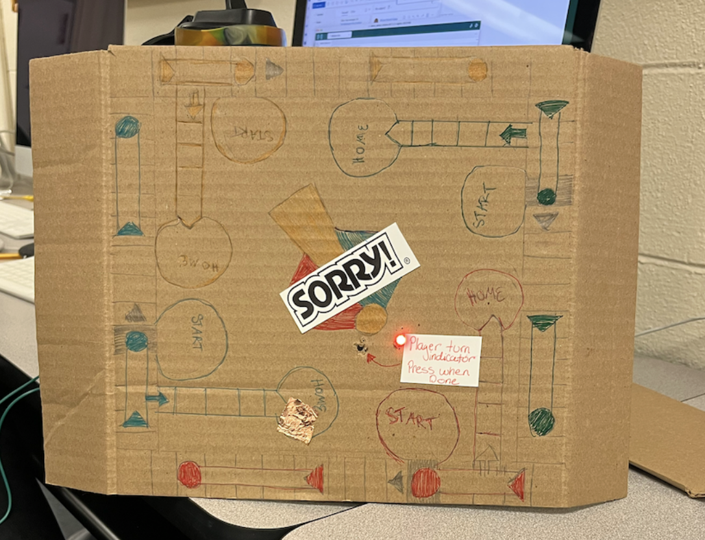

In our lab environment, it was a bit difficult to collect feedback from users. However, we spoke with our classmates to get feedback and ideas during the phases of the development of the product. First, in the idea generation phase we ask our desk-mates which features they felt were the most exciting. THe other lab groups agreed that having the speaker to play fun sounds was important. With this feedback, we chose to move on to a final product with this feature.
The Mid-Fidelity prototype was a good way to create a proof of concept, and demonstrate that we can use a processor and some actuators to achieve the interactions we wanted to add to the game. It was a bit clunky and complicated, but it was nice to bring the idea to life. If we had more time it could have improved by printing the design of the board game instead of drawing it.
Wiring of arduino and breadboard for mid fidelity prototype.Close up of how the LED and push button were wired through the interface (cardboard board game).

Front of prototype. Note the call to action for the user to press the button.Prototype along with the wiring all set up.